計算神経科学・1 日研究の報告
鏡像テストで見つかった、
ハエ全脳シミュレーションを
狂わせる左右の非対称性
公開された全脳モデル（Shiu ら 2024, Nature）を右半球から動かすと、実験で確かめられた 6 つの予測がすべて失敗した。原因は配線図の左右の非対称性（おそらく再構成の誤り）だった。
Kazushi Takehana
2026 年 10 月 27 日

計算神経科学・1 日研究の報告
公開された全脳モデル（Shiu ら 2024, Nature）を右半球から動かすと、実験で確かめられた 6 つの予測がすべて失敗した。原因は配線図の左右の非対称性（おそらく再構成の誤り）だった。
Kazushi Takehana
2026 年 10 月 27 日
背景
コネクトーム＝脳のすべてのニューロンとシナプスの配線図。電子顕微鏡画像から自動検出と人手の校正で再構成する。
ショウジョウバエ成虫の全脳配線図 FlyWire v783
配線図からそのままスパイキングモデルを作る。自由パラメータは 1 つ（wsyn = 0.275 mV）だけ。それでも、実験で確かめられる予測を出した。
こうした誤りが、シミュレーションの予測をどれだけ狂わせるかは、まだ測られていない。
問い
ハエの脳は左右が鏡像の関係にあり、同じ細胞タイプが左右に 1 組ずつある。
生物学を正しく反映した予測なら、右から刺激しても同じ答えになるはず。
左半球から刺激
これまでの検証（Shiu ら）
右半球から刺激
本研究の「鏡像テスト」
鏡像テストは、追加の実験データも新しい仮定も要らない「対照実験」として使える。
方法
入力で膜電位が上がり、しきい値を超えると発火する。結合の強さ＝シナプス数 × wsyn。興奮か抑制かは、予測された伝達物質で決まる（GABA・グルタミン酸＝抑制、それ以外＝興奮）。
1 秒の試行が約 0.2 秒。元の Brian 2 実装とニューロンごとの発火率が一致（3 条件で r ≥ 0.999）。
刺激は細胞タイプ単位：左の砂糖 GRN は LB3b・LB3c の 33 個すべて、JO は 229 個。Shiu らが選んだ組（砂糖 21 個、JO-CE 70 個）とは違う。
6 つのベンチマーク（Shiu らが実験で確かめた予測）
| 刺激する感覚ニューロン | 読み出すニューロン | 再現の基準 |
|---|---|---|
| 砂糖 GRN | MN9 が発火 | > 20 Hz |
| 砂糖＋苦味 GRN | MN9 が抑制される | > 50% |
| 砂糖＋Ir94e GRN | MN9 が抑制される | > 50% |
| JO | aBN1（同じ側） | > 20 Hz |
| JO | aDN1（反対側） | > 10 Hz |
| JO | aDN2（反対側） | > 10 Hz |
GRN＝味覚受容ニューロン MN9＝口吻を伸ばす運動ニューロン
JO＝触角の機械感覚ニューロン（ジョンストン器官）
aBN1・aDN1・aDN2＝触角そうじ（グルーミング）を起こすニューロン
結果 1 鏡像テスト
| ベンチマーク | 左から刺激 | 右から刺激 |
|---|---|---|
| 砂糖 GRN → MN9 | ○ 58 Hz | × 0.4 Hz（暴走） |
| 苦味で抑制 | ○ 89% | × |
| Ir94e で抑制 | ○ 78% | × |
| JO → aBN1（同じ側） | ○ 68 Hz | × 10.5 Hz |
| JO → aDN1（反対側） | ○ 29 Hz | × 0 Hz |
| JO → aDN2（反対側） | ○ 33 Hz | × 0 Hz |
| 再現できた数 | 6 / 6 | 0 / 6 |
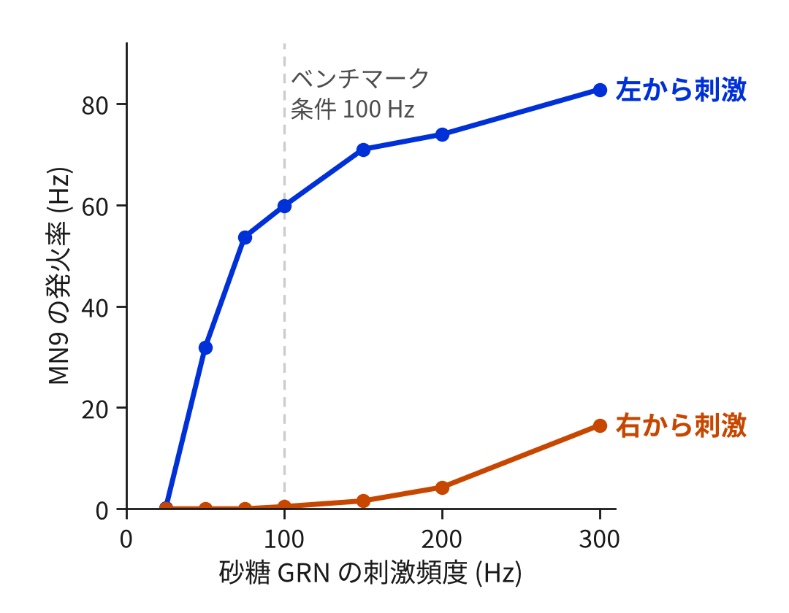
結果 1 鏡像テスト
左から刺激：発火 412 個
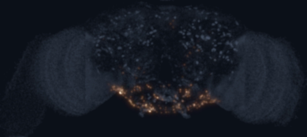
右から刺激：発火 8,612 個（21 倍）
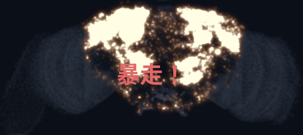
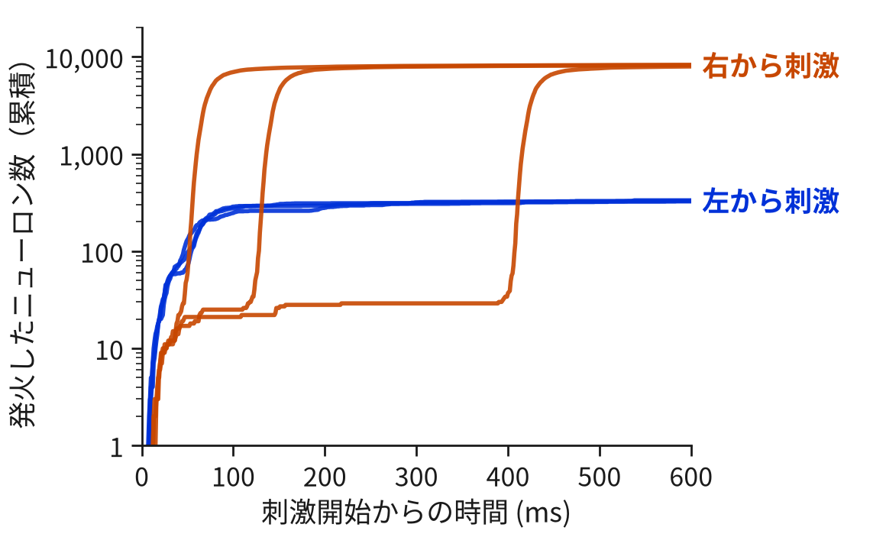
非対称性 1 入力側（おそらく再構成不足）
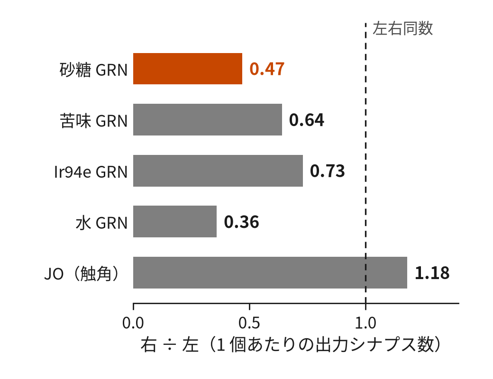
砂糖 GRN 1 個あたり右 125 / 左 265。総数は 左 8,800（33 個）、右 3,000（24 個）。触角の JO には不足がない。
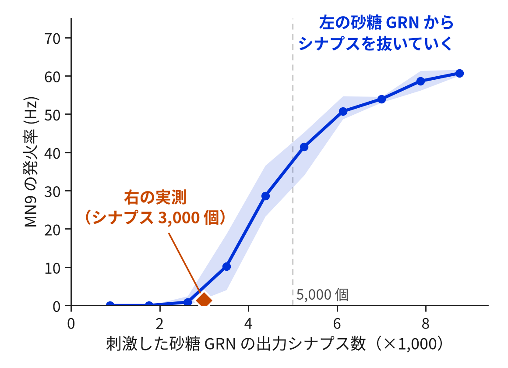
左からシナプスをランダムに抜くと、5,000 個未満で MN9 が急落。右と同じ 3,000 個では 1〜10 Hz で、右の実測 1.3 Hz と一致。
非対称性 2 出力側（おそらく再構成不足）
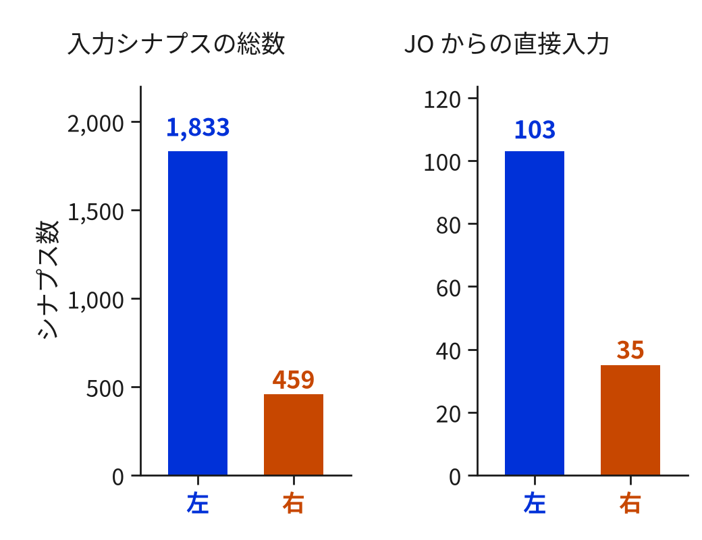
非対称性 1 が「入力側」の不足なら、こちらは「出力側（読み出し）」の不足。
非対称性 3 伝達物質の予測
右から刺激したときの活動の広がり方
触角葉に入るセロトニン細胞は、本来は片側 1 個の CSD ニューロンだけ（局所ニューロンではない）。
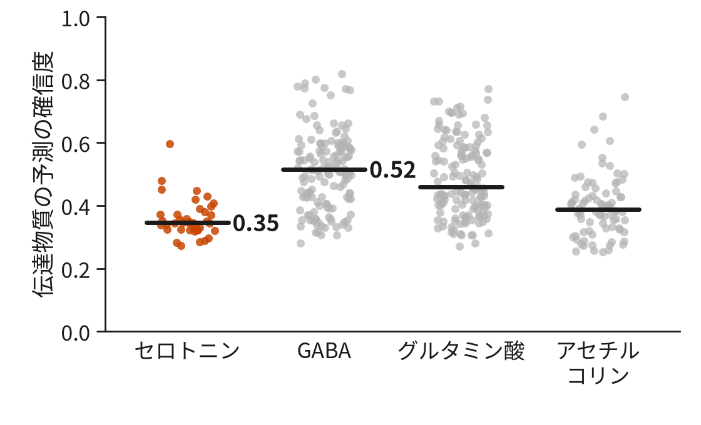
非対称性 3 伝達物質の予測
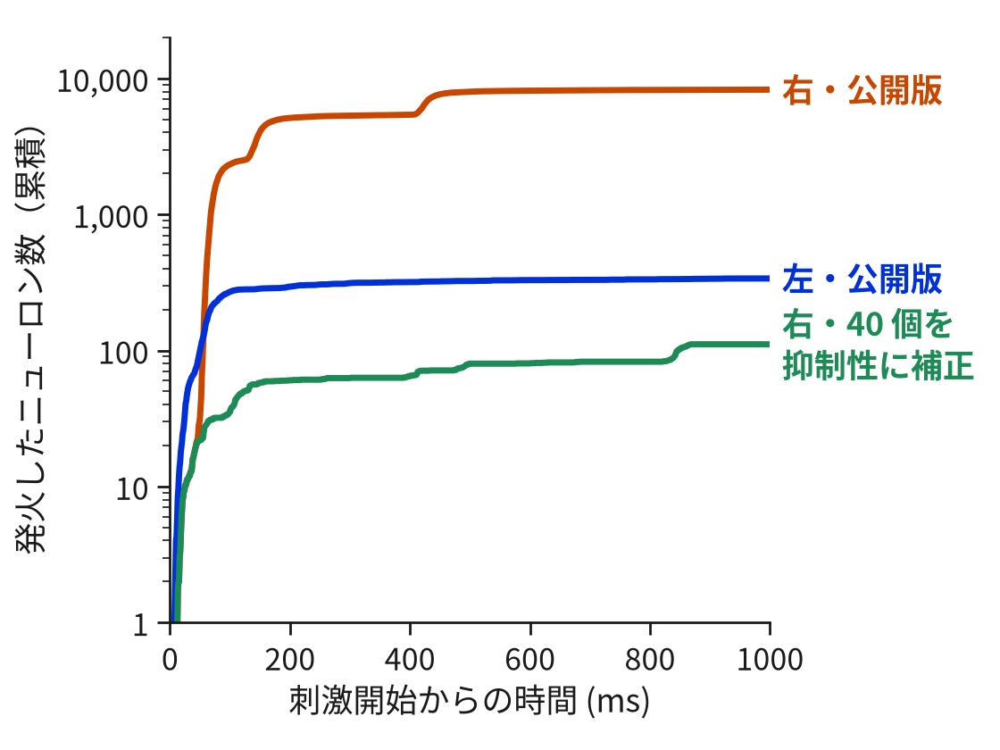
左のベンチマークは変わらない。
セロトニン予測の全 2,201 個を抑制性にすると、暴走は消えるが左の苦味抑制が消える。左の苦味 GRN の 7/21 個がセロトニン予測のため。
同じ細胞タイプでも左右で予測が違う：苦味 GRN のセロトニン予測は左 7/21、右 19/21。
新しい発見 暴走のしくみ
右の砂糖 GRN を 1 個ずつ除いて刺激（24 通り）
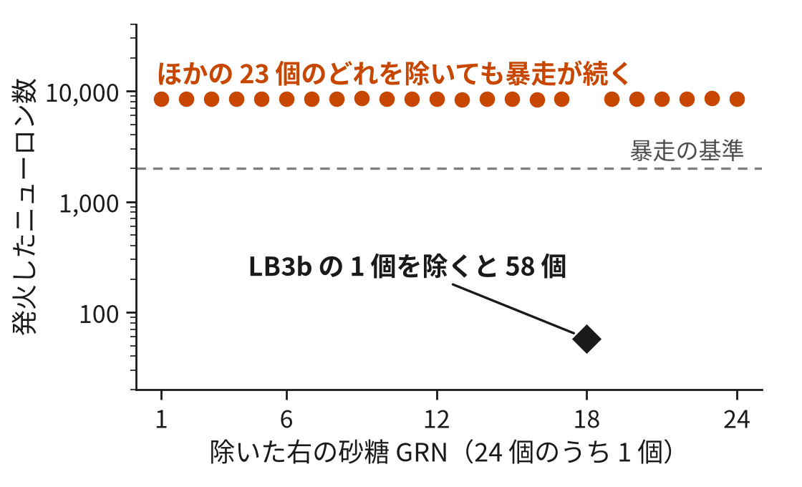
除いたのは LB3b の 1 個（FlyWire 720575940629884119）。8,522 → 58 個。活動数は試行数などで多少変わる（8,522〜8,680）。
出力 154 シナプスのうち 22 個を触角葉の局所ニューロン il3LN6 に出す。左の LB3b（13 個）からは最大でも 3 個。
触角葉の局所ニューロン、左右に 20 個ずつ。増幅器は両側にあるので、右だけ暴走するのは右の入口のため。
どちらか一方を除けば暴走は消える。シナプス不足だけでは暴走しない（左の出力を 90% 削っても最大 418 個）。
補正実験（十分性の確認）
| 砂糖 | 苦味 | Ir94e | aBN1 | aDN1 | aDN2 | 再現数 | |
|---|---|---|---|---|---|---|---|
| 左・公開版 | ○ | ○ | ○ | ○ | ○ | ○ | 6/6 |
| 右・公開版 | × | × | × | × | × | × | 0/6 |
| ＋触角葉の符号補正（40 個） | × | × | × | × | × | × | 0/6 |
| ＋入力シナプス補正 砂糖 ×2.12、苦味 ×1.57、Ir94e ×1.38 | ○ | ○ | ○ | × | × | × | 3/6 |
| ＋読み出し補正 aBN1 の入力 ×3.99（MN9 の入力も ×1.06） | ○ | ○ | ○ | ○ | × | × | 4/6 |
| 最終段の値 | 47 Hz | 85% | 93% | 74 Hz | 3 Hz | ||
反対側の aDN1・aDN2 は回復しない（3 Hz）。全補正後も右の砂糖刺激は左より多くのニューロンを動かす（1,044 対 429）→ まだ特定できていない左右差が残る。
結果 3 配線図にわざと誤りを入れる
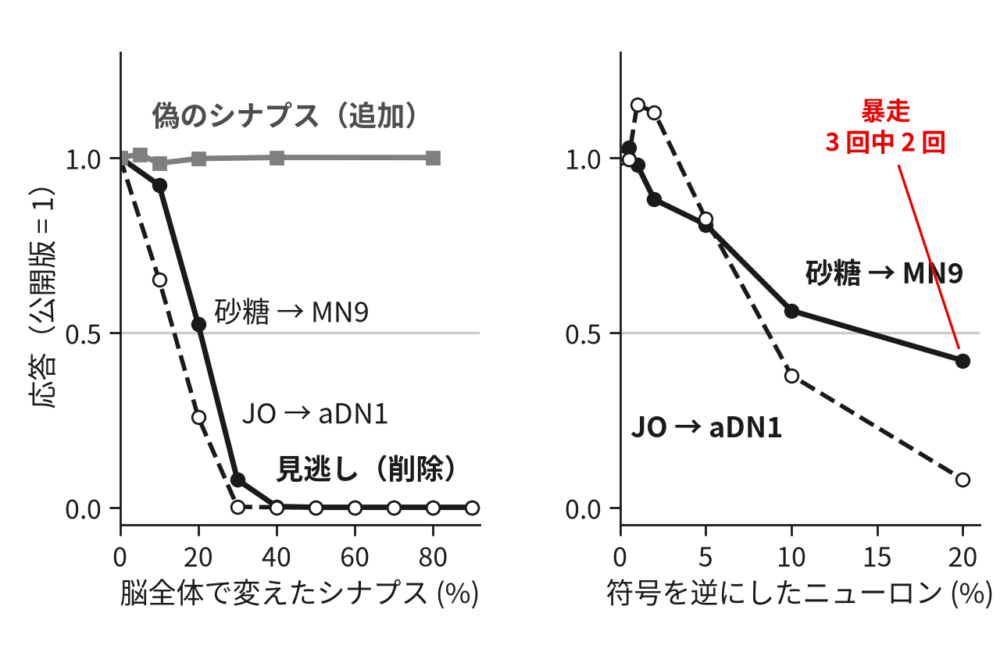
脳全体に一様な欠損は wsyn の調整である程度吸収されうるが、特定の回路だけの欠損は吸収されない。砂糖 GRN の出力だけを削ると約 50% で半減し、右は総数で 66% 少ない。
結果 4 131 種類の感覚細胞タイプで鏡像テスト
暴走を起こしたタイプ（左右どちらかで）
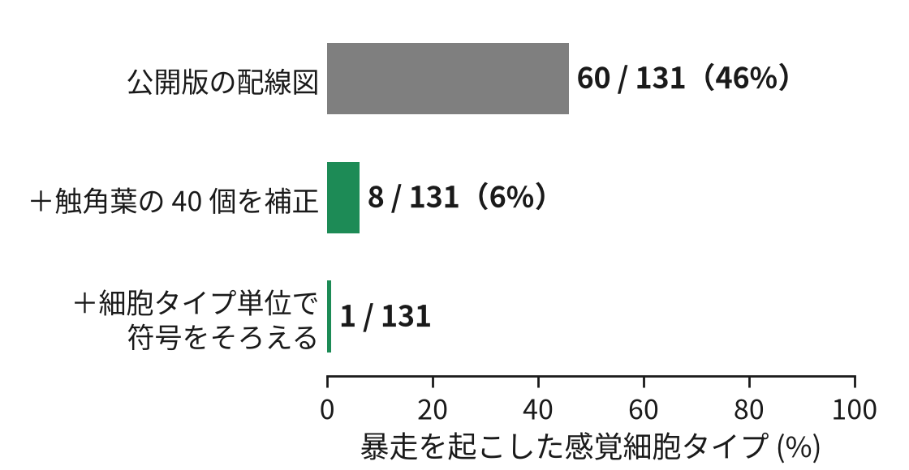
公開版は嗅覚 53 中 52、補正後の 8 つもすべて嗅覚。残る 1 つは光受容細胞 R1–6（自然な応答と考えられる）。
食い違いは、刺激したタイプのシナプス数や符号の左右差とは関係しない（ρ = −0.01 と −0.06、P ≥ 0.5）→ 下流の回路で生じる。
脳全体の応答の一致度（触角葉補正後、n = 118）
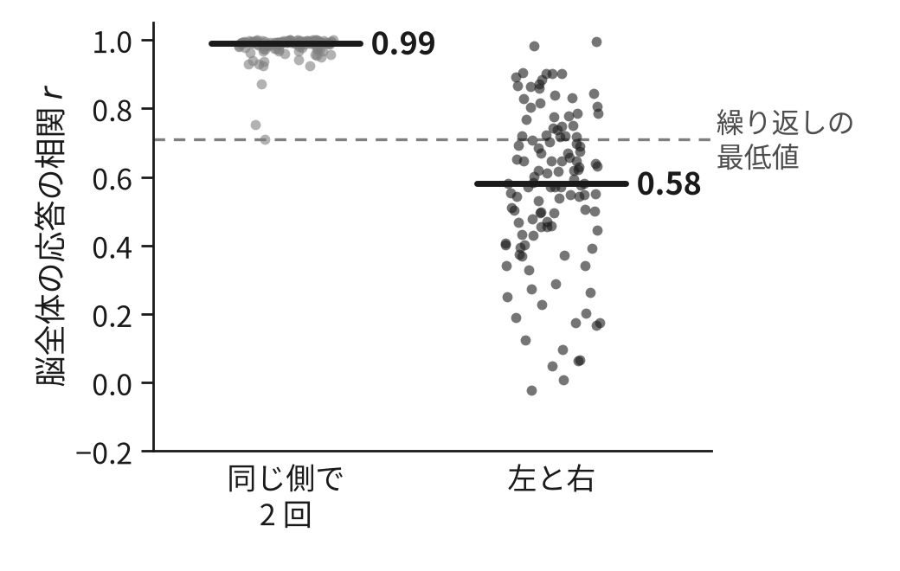
左と右は中央値 r = 0.58（四分位 0.43〜0.72）、同じ側の繰り返しは 0.99（P = 4 × 10−21）。118 中 85 タイプが繰り返しの最低値を下回る。
まとめと提言
研究動画（約 70 秒）
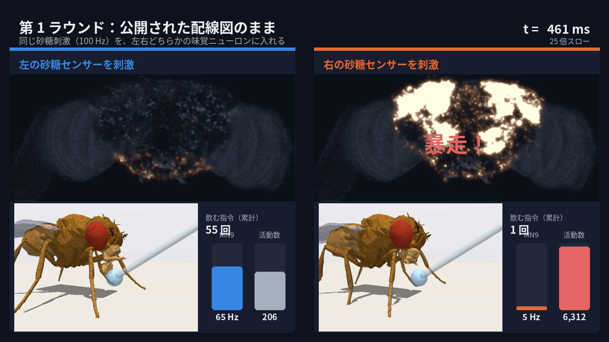
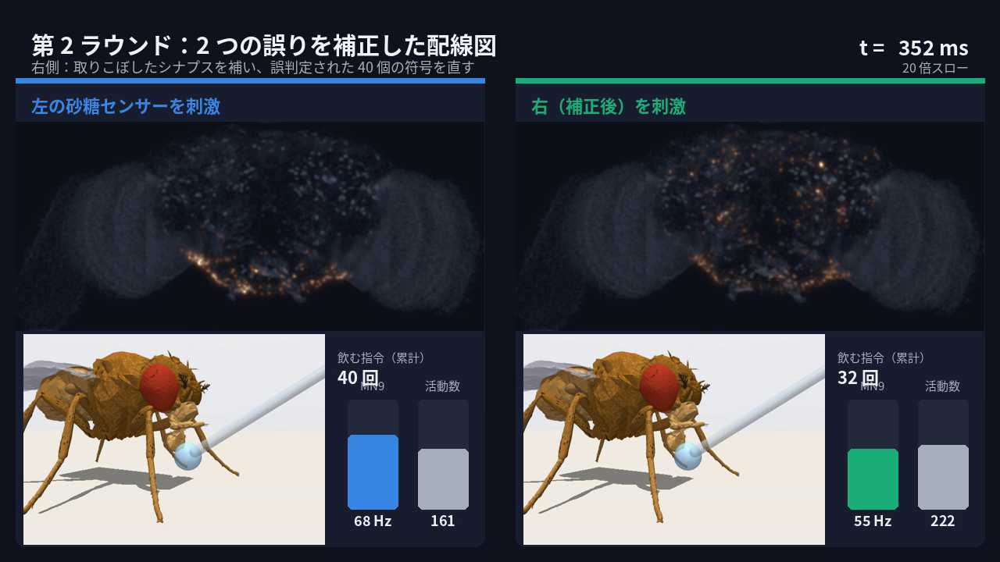
ファイル：video/fly_mirror_test_ja.mp4。脳の活動はシミュレーションの発火を正面から投影したもの。ハエの体の動きは MN9 の発火に合わせた描画（物理シミュレーションではない）。
付録 方法の詳細
dv/dt = (v0 − v + g) / τm
dg/dt = − g / τs
v：膜電位、g：シナプス入力
| 定数 | 値 |
|---|---|
| 静止・リセット電位 v0 | −52 mV |
| しきい値 | −45 mV |
| 膜時定数 τm | 20 ms |
| シナプス時定数 τs | 5 ms |
| 不応期 | 2.2 ms |
| シナプス遅延 | 1.8 ms |
| wsyn（唯一の自由パラメータ） | 0.275 mV |
| 時間刻み／試行の長さ | 0.1 ms／1 s |
付録 検証
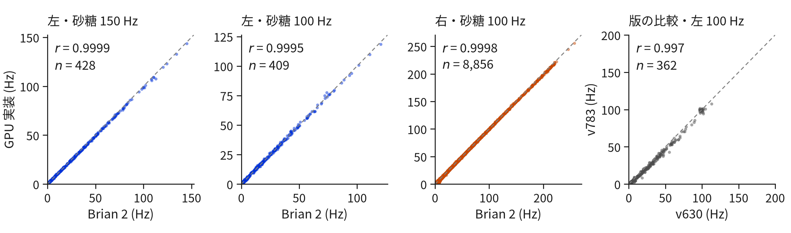
付録 鏡像テストの補足
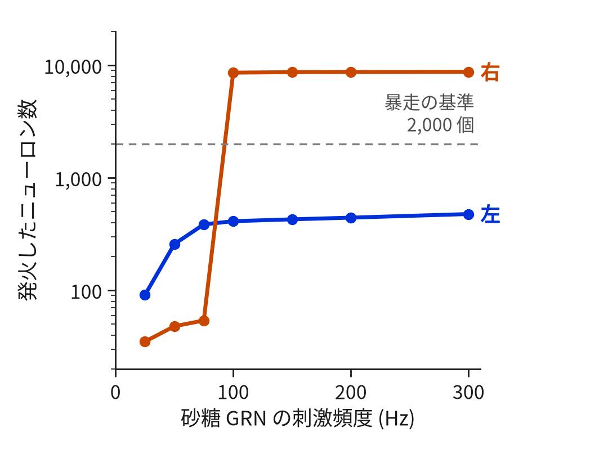
暴走は「応答が大きい」のではなく、刺激と関係のない脳領域まで活動が広がる状態。
付録 方法の詳細
刺激する感覚ニューロン
| 集団 | FlyWire の細胞タイプ |
|---|---|
| 砂糖 GRN（左 33 個・右 24 個） | LB3b, LB3c |
| 苦味 GRN（左右 21 個ずつ） | LB1a〜d |
| Ir94e 様 GRN | LB1e, LB2a〜c |
| 水 GRN | LB3a |
| JO（ジョンストン器官） | JO-C, JO-E の全タイプ |
読み出すニューロン（各半球 1 個）
| 名前 | 細胞タイプ | 役割 |
|---|---|---|
| MN9 | CB0701 | 口吻を伸ばす運動ニューロン |
| aBN1 | SAD093 | 触角そうじ（脳内） |
| aDN1 | DNg62 | 触角そうじ（下行性） |
| aDN2 | DNge078 | 触角そうじ（下行性） |
刺激：味覚 100 Hz、JO 150 Hz、各 8〜10 試行（1 秒）。MN9 は左右 2 個の平均。aBN1 は刺激と同じ側、aDN1・aDN2 は反対側を読む。
Shiu らは手で選んだ組（砂糖 21 個、JO-CE 70 個）を使った。本研究は細胞タイプ全体（例：左の砂糖 GRN 33 個、JO 229 個）を刺激する。
付録 鏡像テストの対照
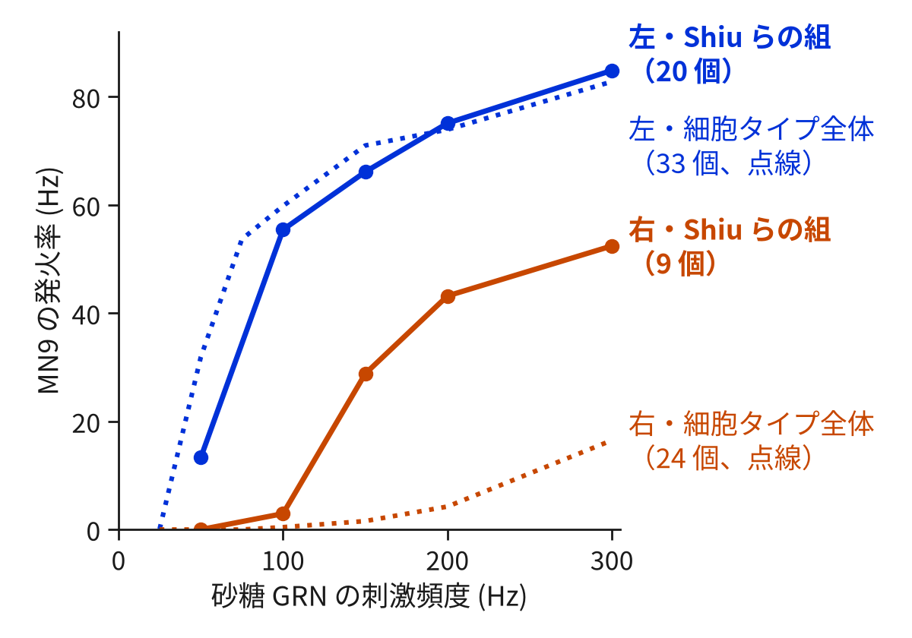
失敗は、どのニューロンを刺激するかにも左右される。入口の 1 個を含むかどうかが分かれ目。
付録 数値一覧（1）
| 項目 | 値 |
|---|---|
| FlyWire v783 ニューロン／結合／シナプス | 138,639／15,091,983／54,492,922 |
| GPU 実装：1 秒の試行にかかる時間 | 約 0.2 秒 |
| Brian 2 との一致（3 条件） | r ≥ 0.999（409〜8,856 個） |
| 版の比較 v630 と v783（ID 不変の細胞） | r = 0.997（362 個） |
| 右の砂糖刺激で発火したニューロン（左） | 8,612 個（412 個） |
| 暴走の開始（3 試行） | 59, 135, 414 ms |
| Brian 2 での右の暴走（刺激細胞を除く） | 8,742 個、MN9 0.55 Hz |
| 右の JO → aBN1 | 10.5 Hz（左 68 Hz） |
| 項目 | 値 |
|---|---|
| 1 個あたり出力シナプス 右/左：砂糖 | 125/265 = 0.47 |
| 同：苦味／Ir94e／水／JO | 0.64／0.73／0.36／1.18 |
| 砂糖 GRN の出力シナプス総数 | 左 8,800（33 個）／右 3,000（24 個） |
| aBN1 の入力シナプス | 左 1,833／右 459（0.25 倍） |
| JO → aBN1 の直接シナプス | 左 103／右 35 |
| 触角葉のセロトニン予測の局所ニューロン | 40 個、確信度の中央値 0.35 |
| 40 個を抑制性にしたときの右の発火数 | 8,680 → 236 個 |
| 苦味 GRN のセロトニン予測 | 左 7/21、右 19/21 |
| セロトニン予測の全ニューロン | 2,201 個 |
| 入口の LB3b 1 個を除いた右の発火数 | 8,522 → 58 個 |
付録 数値一覧（2）と補正の方法
左の砂糖 GRN のシナプス削除と MN9
| 削除率 | MN9 (Hz) | 削除率 | MN9 (Hz) |
|---|---|---|---|
| 0% | 60.7 | 50% | 28.6 |
| 10% | 58.6 | 60% | 10.2 |
| 20% | 54.0 | 70% | 0.9 |
| 30% | 50.7 | 80% | 0 |
| 40% | 41.4 |
触角葉補正あり、100 Hz。各出力シナプスを確率 p で独立に削除（3 回の乱数抽出の平均）。
細胞クラスが触角葉の局所ニューロン（ALLN）で、予測伝達物質がセロトニンの 40 個を抑制性にする。
右の刺激集団の全出力の重みに「左 ÷ 右（1 個あたり平均）」を掛ける（1 を超えるときのみ）：砂糖 ×2.12、苦味 ×1.57、Ir94e ×1.38。
右の読み出しニューロンの全入力の重みに「左 ÷ 右（入力総数）」を掛ける（1 を超えるときのみ）：aBN1 ×3.99、MN9 ×1.06。
付録 誤りの用量反応（図 3、査読後の改訂値）
| 誤りの種類 | 結果（左のベンチマーク、誤りのない配線図 = 1） |
|---|---|
| シナプスの見逃し（脳全体で一様に削除） | 効果が半分になるのは aDN1 14%、砂糖 MN9 21%、aBN1 45%。30% で MN9 は 8%、40% でゼロ。多くの予測は 14〜24% で半減 |
| 苦味・Ir94e の抑制 | 砂糖の応答が残っている間は保たれる（それ以降は評価不能）。以前の「33〜45% まで耐える」は撤回 |
| 偽のシナプス（ランダムに追加） | 80% 追加してもまったく変化なし |
| 符号の誤り（ランダムに興奮⇄抑制） | 1〜2% で平均の変化は 15% 以内（1 回ごとには最大 50%）。8〜18% で 5 つ中 4 つが半減。20% で 3 回中 2 回暴走 |
| 伝達物質の誤判定（確信度に基づく） | 0.25 倍で伝達物質 8.2%・符号 6.1% の細胞が変わる（実際の誤り率約 6% と同程度）。3 回中 2 回は全予測が 20% 以内、1 回は暴走し aDN1 をほぼ失う |
| シナプスの強さのばらつき（平均 1） | σ = 0.25 でおおむね保たれる（aDN1 −25%）、σ = 0.5 で aDN1 −56% かつ 3 回中 1 回暴走、σ = 1 で全回暴走 |
付録 131 タイプの鏡像テスト（図 4、査読後の改訂値）
左右それぞれに 3 個以上の注釈があるすべての感覚細胞タイプ：嗅覚 53、機械感覚 50、味覚 13、湿度 4、温度 3、視覚 3、未分類 5。各タイプを左右別々に 100 Hz で刺激（4 試行）。暴走の判定から刺激したニューロン自身を除く。
| 暴走を起こしたタイプ（左右どちらかで） | 数 |
|---|---|
| 公開版（嗅覚では 53 中 52） | 60/131（46%） |
| 触角葉の 40 個を抑制性に補正（すべて嗅覚） | 8/131（6%） |
| さらに細胞タイプ単位の符号補正 | 1/131（R1–6） |
R1–6 は片側 4,029〜4,423 個を刺激し、視葉を広く動かす自然な応答と考えられる。
付録 限界と注意点
付録 用語集
付録 参考文献
付録 クレジット
デジタル庁デザインシステムのデザイントークン（色・タイポグラフィ・角丸）を使用。
MIT License, Copyright (c) 2023 デジタル庁
ライセンス全文：slides/dads/LICENSE
フォント：Noto Sans JP（SIL Open Font License）